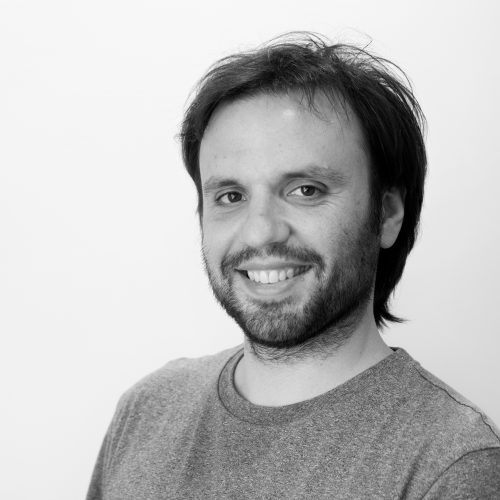

home
positions
education
dev-projects
academic work
contact

Guillem Martínez-Cànovas
Full Stack Developer
I am a Computer and Telecommunications engineer with a PhD in Economics, from Valencia (Spain).
I used to do research on Game Theory and strategic behavior, theoretically and experimentally.
Nowadays I work full-time as a software developer.